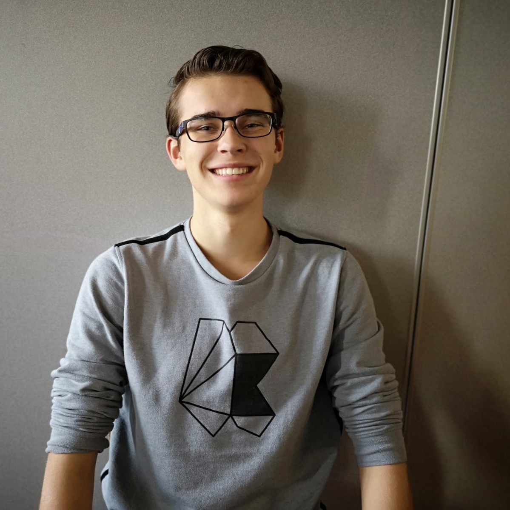

Ik ben Jelle Buurman. Geboren op 13-02-2001 en studerend op het Mediacollege in
Amsterdam. Ik heb tijdens deze studie stage gelopen bij Brick
Zero.
Ik ben meer gericht op front-end, maar ik ben ook bereid om meer te leren. Zo kan ik een betere
programmeur worden. Ik ben erg leergierig en in staat om tot het uiterste te gaan.

Stage Brickzero
Tijdens mijn eerste stage bij Brickzero heb ik veel front-end geleerd. Ik schrijf nu betere en nettere code.
Mijn styling van websites is in 4 maanden tijd heel veel vooruit gegaan. ook heeft dit effect op meerdere
aspecten dan alleen front-end, namelijk ook het design en de back-end. Hier kunt u mijn stageblog bekijken. Hier heb ik mijn meest leerzame
opdrachten neergezet:
Aan het begin van mijn eerste stage bij Brickzero kreeg ik een
oefenopdracht.
Dit was het namaken van een van hun vorige projecten. Hier heb ik gewerkt met HTML en CSS.
Fishonefire was een lastige site om te maken, omdat deze veel nieuwe
aspecten
voor mij had. Deze heb ik samen met de andere front-enders in elkaar gezet.
UBRiO was een toffe opdracht. Dit vind ik zelf de mooiste site waar ik mee
heb
geholpen om te stylen. Deze site heeft veel jQuery effecten wat ik ook heb toegepast.
Mediacollege Amsterdam
Op het Mediacollege doe ik de drie-jarige opleiding media-development. Hier leer ik alle aspecten van het bouwen
van een mooie website. Tijdens mijn studie ben ik erachter gekomen dat front-end mij beter ligt dan back-end.
Maar ik ben leergierig en zal daarom graag nieuwe dingen willen leren.
Deze site was een opdracht aan het einde van leerjaar 1. Dit is gemaakt in smarty. Zelf ben
ik trots qua back-end maar de front-end kon beter wat mij betreft.
In leerjaar 1 ben ik ook 1 periode game development gaan doen. Dit was mijn leukste project.
Het is gemaakt in Unity en C#. Naast dat ik media development leuker vind, vond ik dit een
super leuke opdracht om te maken.
Aan het einde van leerjaar 1 kregen wij de opdracht om doormiddel van php een bmi calculator
te maken. Ik ben trots op het resultaat en kreeg hier ook een goed cijfer voor. Wel is de
front-end iets minder.
In leerjaar 2 kregen wij de opdracht om met bootstrap te werken. Na even uitvogelen hoe dat
precies werkt, lukte het me al snel om het onder de knie te krijgen. Ik ben trots op het
resultaat wat ik heb opgeleverd.